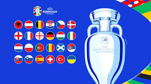

Euros Sport
Euros Sport The place To be
- Top National Teams: Competing teams are among the best in Europe, providing high-quality and competitive matches.
- Historic Rivalries: Matches often feature historic and intense rivalries, adding to the excitement and drama.
- Widespread Fan Engagement: Fans from all over Europe and beyond come together, creating an electric atmosphere in stadiums and fan zones.
- Talented Players: The tournament is a stage for football stars to shine and for emerging talents to make their mark.
- Cultural Celebration: The Euros celebrate not only football but also the diverse cultures and unity of the participating nations.